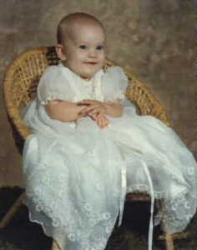
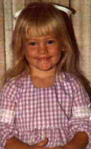
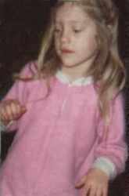
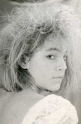
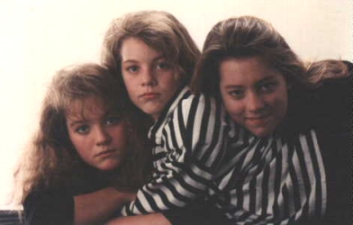
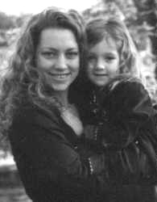
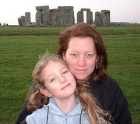
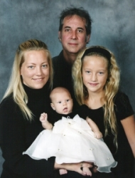
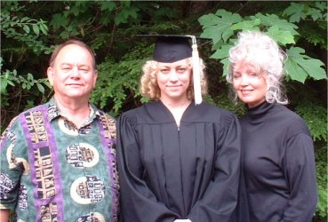

Mother's Memories:
When Natasha was born, I'd planned to have her the same way I had Melanie, a natural childbirth in the same hospital in San Diego. I started labor when I had a houseful of relatives (my mother, Aunt Kathleen's family, Ann Yvette and Ron) over for Sunday lunch. Everyone insisted I lie down. I stayed that way until early in morning when it was time to go to the hospital. When Dad drove me to the hospital I remember not wanting to get out of the car knowing the pain I would have to go through. But I was pleasantly surprised because it was my easiest childbirth. Once Natasha was born we thought she looked just like Melanie did as a baby, but as time passed she changed to look like herself. She was such a fantastic child with a really positive attitude. She just made me feel so great with all her smiles and love. When I weaned her after a year she decided she didn't need me anymore and took off, getting lost everywhere we went. My knees would be trembling as I'd ask the Police to help me find her. She loved playing in the creek, the trees and on the trampoline. She loved reading and read all the classics for hours each day. She hated violence on TV and would run and hide when a bad scene would come on. She learned to draw and play the piano at a very early age. She had natural talent in both and spent hours practising them. She even played the piano for her 6th grade graduation. I was so proud of the way she worked on her talents so diligently. She always stayed so happy and fun. I am so proud of her.